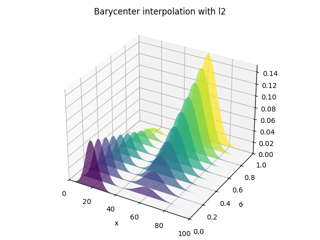

Note
Go to the end to download the full example code.
1D Wasserstein barycenter demo for Unbalanced distributions
This example illustrates the computation of regularized Wasserstein Barycenter as proposed in [10] for Unbalanced inputs.
[10] Chizat, L., Peyré, G., Schmitzer, B., & Vialard, F. X. (2016). Scaling algorithms for unbalanced transport problems. arXiv preprint arXiv:1607.05816.
# Author: Hicham Janati <hicham.janati@inria.fr>
#
# License: MIT License
# sphinx_gallery_thumbnail_number = 4
import numpy as np
import matplotlib.pylab as pl
import ot
# necessary for 3d plot even if not used
from mpl_toolkits.mplot3d import Axes3D # noqa
from matplotlib.collections import PolyCollection
Generate data
# parameters
n = 100 # nb bins
# bin positions
x = np.arange(n, dtype=np.float64)
# Gaussian distributions
a1 = ot.datasets.make_1D_gauss(n, m=20, s=5) # m= mean, s= std
a2 = ot.datasets.make_1D_gauss(n, m=60, s=8)
# make unbalanced dists
a2 *= 3.0
# creating matrix A containing all distributions
A = np.vstack((a1, a2)).T
n_distributions = A.shape[1]
# loss matrix + normalization
M = ot.utils.dist0(n)
M /= M.max()
Plot data
# plot the distributions
pl.figure(1, figsize=(6.4, 3))
for i in range(n_distributions):
pl.plot(x, A[:, i])
pl.title("Distributions")
pl.tight_layout()
Barycenter computation
# non weighted barycenter computation
weight = 0.5 # 0<=weight<=1
weights = np.array([1 - weight, weight])
# l2bary
bary_l2 = A.dot(weights)
# wasserstein
reg = 1e-3
alpha = 1.0
bary_wass = ot.unbalanced.barycenter_unbalanced(A, M, reg, alpha, weights=weights)
pl.figure(2)
pl.clf()
pl.subplot(2, 1, 1)
for i in range(n_distributions):
pl.plot(x, A[:, i])
pl.title("Distributions")
pl.subplot(2, 1, 2)
pl.plot(x, bary_l2, "r", label="l2")
pl.plot(x, bary_wass, "g", label="Wasserstein")
pl.legend()
pl.title("Barycenters")
pl.tight_layout()
Barycentric interpolation
# barycenter interpolation
n_weight = 11
weight_list = np.linspace(0, 1, n_weight)
B_l2 = np.zeros((n, n_weight))
B_wass = np.copy(B_l2)
for i in range(0, n_weight):
weight = weight_list[i]
weights = np.array([1 - weight, weight])
B_l2[:, i] = A.dot(weights)
B_wass[:, i] = ot.unbalanced.barycenter_unbalanced(
A, M, reg, alpha, weights=weights
)
# plot interpolation
pl.figure(3)
cmap = pl.get_cmap("viridis")
verts = []
zs = weight_list
for i, z in enumerate(zs):
ys = B_l2[:, i]
verts.append(list(zip(x, ys)))
ax = pl.gcf().add_subplot(projection="3d")
poly = PolyCollection(verts, facecolors=[cmap(a) for a in weight_list])
poly.set_alpha(0.7)
ax.add_collection3d(poly, zs=zs, zdir="y")
ax.set_xlabel("x")
ax.set_xlim3d(0, n)
ax.set_ylabel(r"$\alpha$")
ax.set_ylim3d(0, 1)
ax.set_zlabel("")
ax.set_zlim3d(0, B_l2.max() * 1.01)
pl.title("Barycenter interpolation with l2")
pl.tight_layout()
pl.figure(4)
cmap = pl.get_cmap("viridis")
verts = []
zs = weight_list
for i, z in enumerate(zs):
ys = B_wass[:, i]
verts.append(list(zip(x, ys)))
ax = pl.gcf().add_subplot(projection="3d")
poly = PolyCollection(verts, facecolors=[cmap(a) for a in weight_list])
poly.set_alpha(0.7)
ax.add_collection3d(poly, zs=zs, zdir="y")
ax.set_xlabel("x")
ax.set_xlim3d(0, n)
ax.set_ylabel(r"$\alpha$")
ax.set_ylim3d(0, 1)
ax.set_zlabel("")
ax.set_zlim3d(0, B_l2.max() * 1.01)
pl.title("Barycenter interpolation with Wasserstein")
pl.tight_layout()
pl.show()
- 
/home/circleci/project/ot/unbalanced/_sinkhorn.py:1666: RuntimeWarning: overflow encountered in divide
u = (A / Kv) ** fi
/home/circleci/project/ot/unbalanced/_sinkhorn.py:1671: RuntimeWarning: invalid value encountered in divide
v = (Q / Ktu) ** fi
/home/circleci/project/ot/unbalanced/_sinkhorn.py:1682: UserWarning: Numerical errors at iteration 595
warnings.warn("Numerical errors at iteration %s" % i)
/home/circleci/project/ot/unbalanced/_sinkhorn.py:1671: RuntimeWarning: overflow encountered in divide
v = (Q / Ktu) ** fi
/home/circleci/project/ot/unbalanced/_sinkhorn.py:1682: UserWarning: Numerical errors at iteration 974
warnings.warn("Numerical errors at iteration %s" % i)
/home/circleci/project/ot/unbalanced/_sinkhorn.py:1682: UserWarning: Numerical errors at iteration 615
warnings.warn("Numerical errors at iteration %s" % i)
/home/circleci/project/ot/unbalanced/_sinkhorn.py:1682: UserWarning: Numerical errors at iteration 455
warnings.warn("Numerical errors at iteration %s" % i)
/home/circleci/project/ot/unbalanced/_sinkhorn.py:1682: UserWarning: Numerical errors at iteration 361
warnings.warn("Numerical errors at iteration %s" % i)
Total running time of the script: (0 minutes 1.181 seconds)